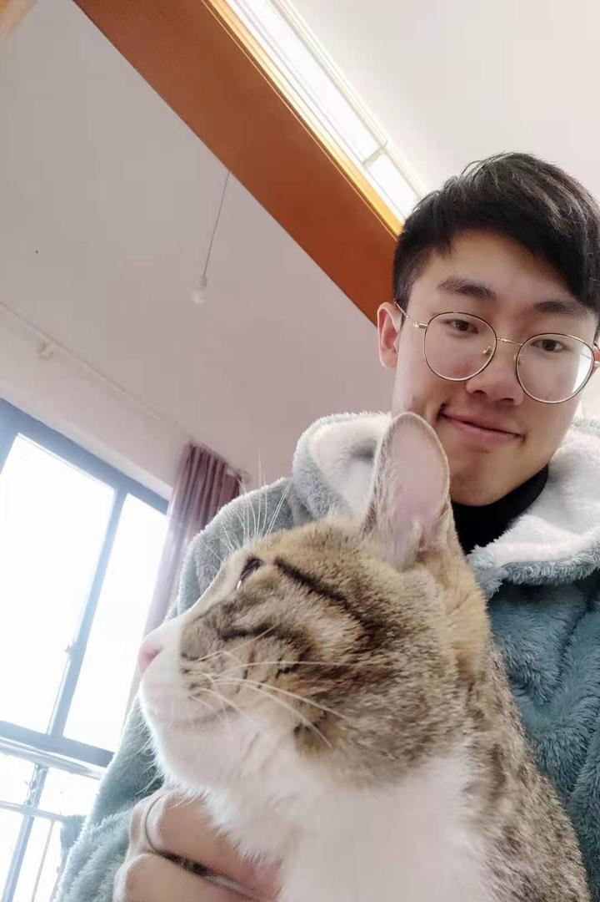
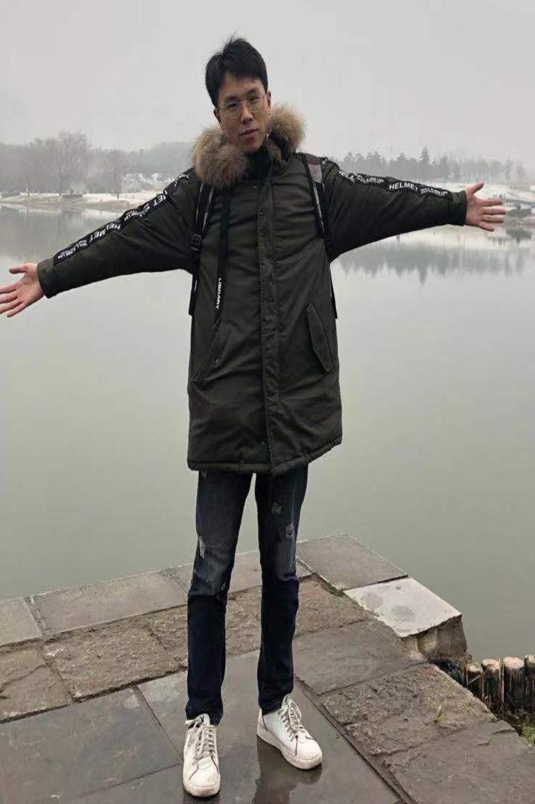
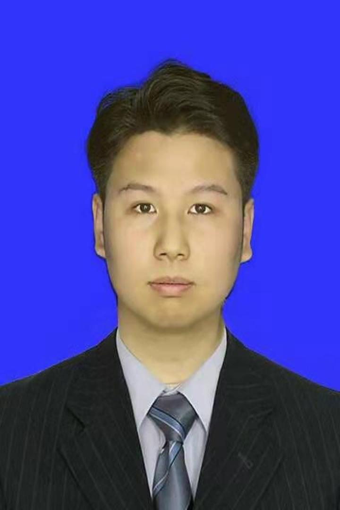
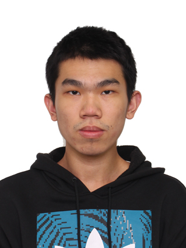
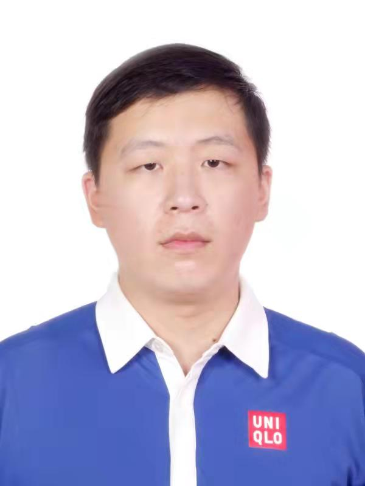
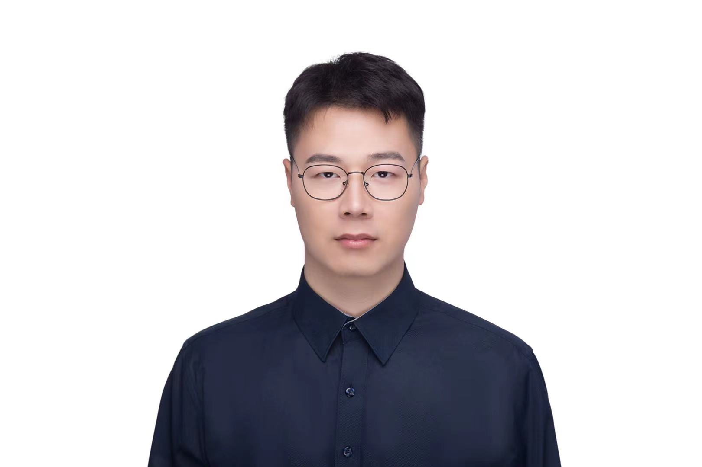
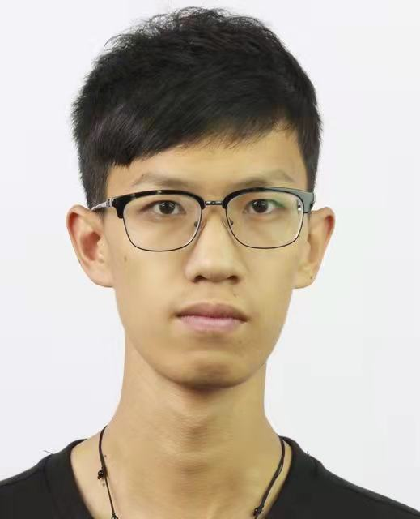

副教授，四川省“千人计划”特聘专家，唐立新优秀学者，四川省科学技术进步进步一等奖获得者
美国南伊利诺伊大学博士，2017年5月
电子科技大学，计算机科学与工程学院，认知计算与智能决策团队
邮箱: zkang@uestc.edu.cn
GoogleScholar
Github
招生通告
常年招收人工智能方向硕士及博士研究生、本科实习生。
招生要求：踏实、认真、严谨，对工作与学习有较强的积极主动性；在编程或数学方面有较深的功底和较浓的兴趣。
Current Students
博士 (2020-2025)
研究方向：社交媒体分析
主页: N/A
学术成果:

硕士 (2019-2022)
研究方向：多视图聚类，图信号处理
荣誉: 国家奖学金，电子科技大学2021年研究生学术青苗奖
学术成果:申请发明专利4项

     硕士生 本科生
硕士 (2020-2023)
研究方向：深度学习，图信号处理
主页: N/A
学术成果:
硕士 (2020-2023)
研究方向：社交媒体分析
主页: N/A
学术成果:申请发明专利1项
硕士 (2020-2023)
研究方向：知识图谱
荣誉: 2021华为软件精英挑战赛二等奖
学术成果:申请发明专利1项
硕士 (2021-2024)
研究方向：深度学习，图信号处理
主页: huawuque.site and https://www.cnblogs.com/panern/
学术成果:申请发明专利1项
硕士 (2021-2024)
研究方向：社交媒体分析与挖掘
主页: N/A
学术成果:
硕士 (2021-2024)
研究方向：社交媒体分析与挖掘
主页: N/A
学术成果:
硕士 (2021-2024)
研究方向：社交媒体分析与挖掘
主页: N/A
学术成果:
硕士 (2021-2024)
研究方向：模式识别
主页: N/A
学术成果:
Graduated Students
吕俊成（农业银行）
陆啸（阿里巴巴）
马铮睿（计算所，2021），李姜辛（复旦，2021），刘展宇（上交，2021）
周望涛（电子科大，2020），薄晓凡（UCLA，2020）， 郭梓鹏（电子科大，2020）
许宏辉（Georgia State University，2019）, 石国昕（清华，2019），赵新甲（海康威视，2019），潘海琪（信工所，2019）
陆亿崴（University of Manitoba，2018）